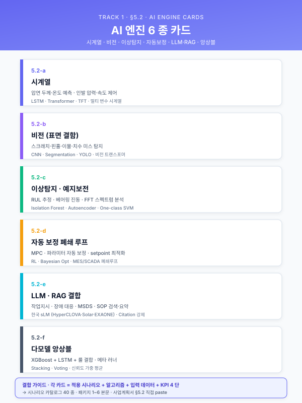
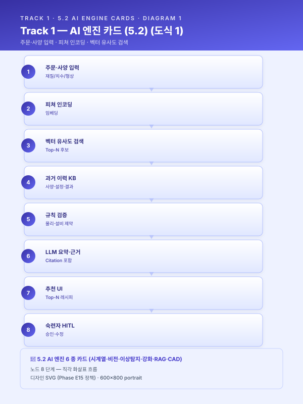
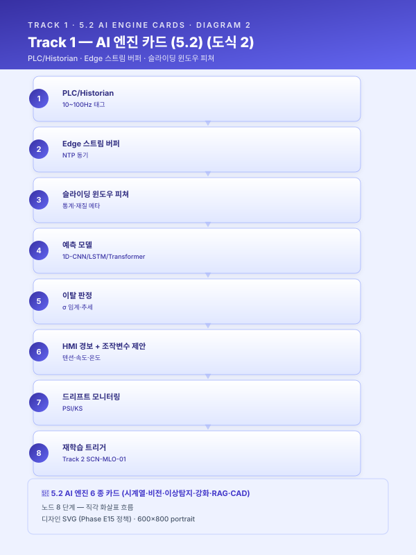
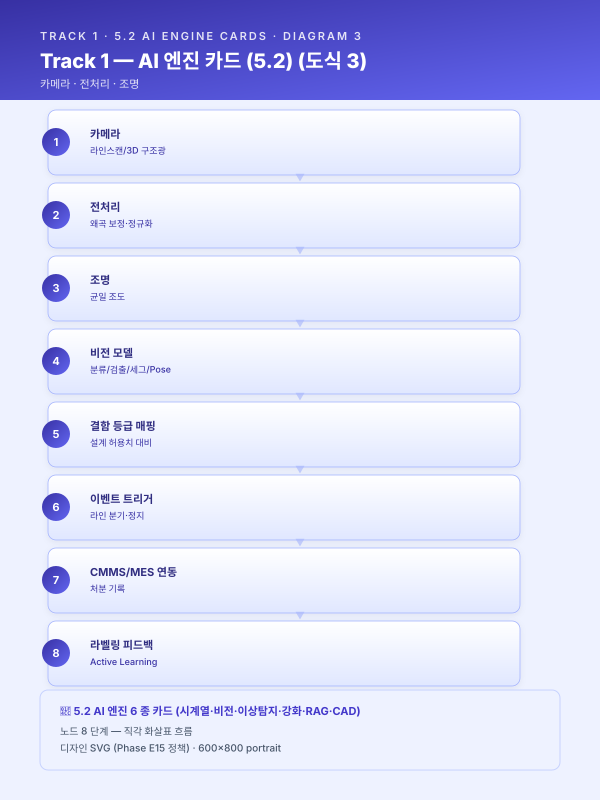
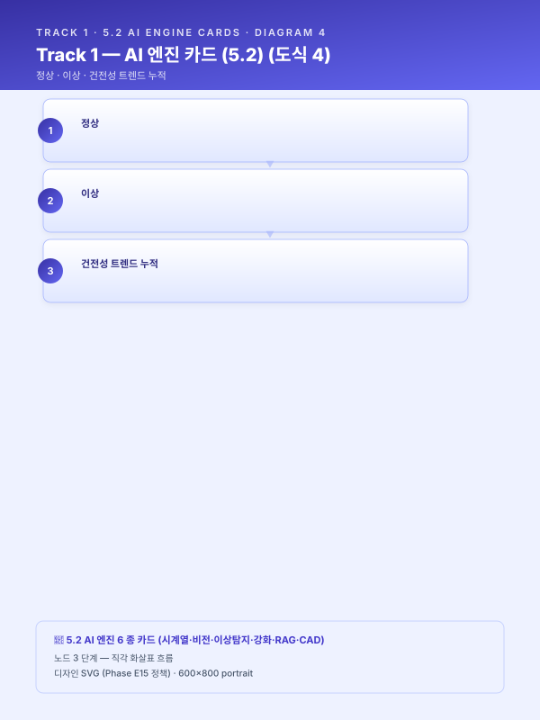
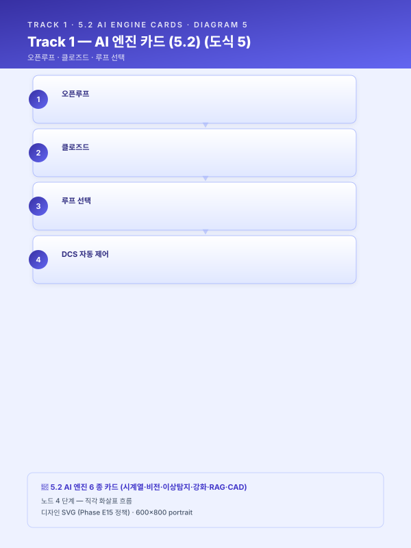
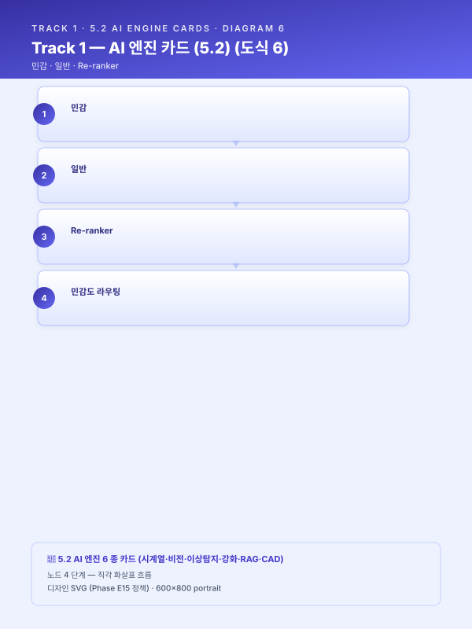
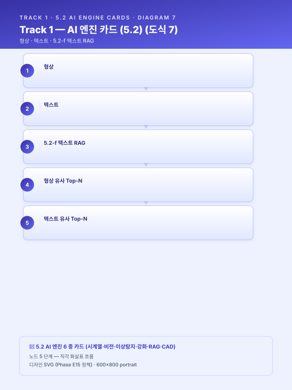

Track 1 — 5.2 AI 엔진 변형 카드¤
📖 약 13 분 읽기

문서 목적¤
본 문서는 track/track1-index.md 의 5.2 절 "AI 엔진 개발 단계" 를 시나리오별 교체 블록 으로 분산한 카드 모음이다. 단일 서술 대신 엔진 패턴 6종을 제공하여, 대상 시나리오(카탈로그 scenario/catalog.md 의 SCN-XXX 카드)에 맞는 카드를 선택·조합해 본문 5.2 절을 채울 수 있도록 한다.
복수 시나리오를 결합하는 사업의 경우 복수 카드를 병기하되, 각 카드는 섹션 넘버 5.2-a ~ 5.2-f 를 부여해 재참조가 가능하도록 한다.
ℹ️ 페이지 정보 (워크스페이스 메타)
플레이스홀더 범례 — [고객사] 고객사명, [공정] 대상 공정명, [수치] 수치, [기간] 기간, [%] 비율.
특정 고객사 전용 문구는 공통 자산과 분리되며, 본 문서는 고정 공통 블록 기준으로 작성됨.
변형 카드 매트릭스 (시나리오 × 엔진 패턴)¤
| 엔진 패턴 | 카드 ID | 대표 시나리오 (카탈로그) |
|---|---|---|
| 유사 사례 검색·추천 | 5.2-a | SCN-STL-04, 07, 08, SCN-MET-05, 07 |
| 시계열 품질·이탈 예측 | 5.2-b | SCN-STL-01, 03, 05, 12, SCN-RUB-01, 04, SCN-MET-01 |
| 비전 검사 | 5.2-c | SCN-STL-10, 11, SCN-MET-02, 03, 06, SCN-RUB-02, 05, SCN-SAF-01 |
| 예지보전 | 5.2-d | SCN-STL-09, SCN-MET-01, SCN-UTL-02 |
| 공정 최적화·제어 | 5.2-e | SCN-STL-02, 06, SCN-MET-04, SCN-RUB-03, SCN-UTL-01, 05 |
| LLM·RAG 지식검색 | 5.2-f | SCN-LLM-01~04, SCN-STL-08, SCN-MET-07, SCN-SAF-03 |
| 도면·CAD 형상 임베딩 | 5.2-g | SCN-LLM-04 (형상 모드), SCN-MET-03 (CAD 비교), SCN-MET-05 (잠재) |
시나리오 카드에 복수 트랙 매핑이 있을 경우 해당 엔진 패턴을 병기해 작성한다. 예: SCN-STL-07 은 5.2-a + 5.2-f 병기.
5.2-a 유사 사례 검색·추천 엔진¤
- 적용 시나리오: SCN-STL-04 냉간압연 패스 스케줄 표준화·최적화 (주; 5.2-e 와 결합 가능), SCN-STL-07 인발·필거밀 공정설계 LLM, SCN-STL-08 원소재-완제품 상관(분석 파트), SCN-MET-05 단조·절단·절곡 설정 추천, SCN-MET-07 공구·금형 관리 RAG
- 목적: 과거 성공 이력(사양 - 설정 - 결과) 을 지식베이스로 축적하고, 신규 주문·작업 투입 시 유사 사례에 기반해 초기 설계·설정 초안을 자동 생성하며 숙련자의 의사결정을 보조한다.
- 엔진 구조:
- 유사 케이스 검색 모듈: 재질·치수·형상 피쳐를 결합한 벡터 임베딩 + 조건 필터(재질군·치수 허용 범위)
- 추천 모듈: Top-N 과거 사례를 통계 집계 또는 LLM 요약으로 정리해 추천 레시피 N개를 제시
- 규칙 검증 모듈: 허용 압하율 · 설비 용량 한계 · 열처리 온도 범위 · 공차 한계 등 물리·설비 제약 체크
- 출력 정보 설계: 추천 공정 경로 / 조건 범위 / 참조 유사 오더 / 예상 수율·품질
- 포함 내용:
- 벡터 임베딩 전략 (재질 코드 · 치수 · 형상 피쳐 결합 방식)
- Top-N 유사도 임계값 및 복수 후보 제시 원칙
- 물리·설비 제약 검증 룰셋 관리 방식
- LLM 요약·근거 표시 (유사 사례 ID · 성적서 · 공정설계서 페이지 링크)
- 신규 완료 오더 자동 편입을 통한 데이터 플라이휠
- 삽화·도식 후보: 엔진 내부 모듈 다이어그램(검색 → 추천 → 검증 → 출력), 주문서 입력 → 유사 사례 Top-N → 추천 레시피 UI 목업, 근거 문서 인용 표시 예시.
- 삽화 (Mermaid 초안):

- 주의·선행조건: 과거 이력의 구조화(재질 · 치수 · 공정 파라미터 · 품질 결과 일관 스키마) 선행. 자유 텍스트 주석은 OCR·정제 후 편입. 숙련자 검수 루프(5.3 HITL) 와 필수 결합. - 고객사별 가변 여부: 업종별 교체 — 철강(레시피 추천) vs 단조·절단(설정 추천) vs 공구·금형(재생 노하우).5.2-b 시계열 품질·이탈 예측 엔진¤
- 적용 시나리오: SCN-STL-01 연주 품질, SCN-STL-03 열연 두께·폭, SCN-STL-05 냉연 두께 조기경보, SCN-STL-12 강재 수요 예측·APS 스케줄링, SCN-RUB-01 배합 분산도, SCN-RUB-04 사출 불량, SCN-MET-01 공구 마모 신호
- 목적: 공정 시계열 신호를 실시간 추론해 품질 이탈을 사전에 예측·경보하고, 필요 시 피드포워드 조치 힌트를 작업자에게 제공한다.
- 엔진 구조:
- 데이터 수집·동기화: PLC / Historian → 스트림 버퍼 (초 · 10Hz · 100Hz 등 혼합)
- 피쳐 블록: 슬라이딩 윈도우 통계, 스탠드·설비별 기여도, 재질·레시피 메타 결합
- 예측 모델: 지연·정확도 요구에 따라 1D-CNN / LSTM / Transformer 선택
- 이탈 판정 모듈: 목표 대비 σ 임계 + 추세 기반 조기 경보 트리거
- 피드포워드 출력: HMI 경보 + 조작 변수 제안값 (텐션·속도·온도 등)
- 포함 내용:
- 센서 수집 주기와 모델 입력 윈도우 설계
- 재질·레시피별 조건부 모델 분기 또는 조건 피쳐 삽입 전략
- σ · PSI 등 조기 경보 임계 설정 원칙
- 엣지·서버 이원 배포 (추론 지연 < 100 ms 요구 시 엣지)
- 성능 KPI: 예측 정확도, 조기 경보 리드타임, False Alarm Rate
- 삽화·도식 후보: 스트림 파이프라인(Edge → Historian → Inference → HMI), 실시간 예측 vs 실측 오버레이, 스탠드·설비별 기여도 SHAP 바차트, 조기 경보 타임라인.
- 삽화 (Mermaid 초안):

- 주의·선행조건: PLC 태그 표준화·시간 동기(NTP), 목표 품질 실측 라벨 확보, 추론 지연 요구 확정. Track 2 드리프트 탐지(SCN-MLO-01) 와 결합 필수. - 고객사별 가변 여부: 업종·공정별 교체 — 센서 종류 · 예측 대상 · 판정 임계 모두 다름.5.2-c 비전 검사 엔진¤
- 적용 시나리오: SCN-STL-10 표면결함 비전, SCN-STL-11 UT/ECT 자동판정(신호 이미지화), SCN-MET-02 용접 비드, SCN-MET-03 3D 치수 검사, SCN-MET-06 작업자 행동 인식, SCN-RUB-02 압출 표면·치수, SCN-RUB-05 고무 외관, SCN-SAF-01 안전 영상
- 목적: 이미지·영상·포인트클라우드 기반 비전 AI로 결함 검출, 치수 측정, 행동 인식 등을 자동화하여 육안 검사 한계를 극복한다.
- 엔진 구조:
- 촬영·조명 설계: 라인스캔 / 에어리어 / 다각도 / 3D 구조광 선택, 조도 균일성 확보
- 라벨링·사전학습: 소량 라벨 + Self-supervised Pretraining 또는 Synthetic Data 보강
- 모델: 분류(EfficientNet · ViT), 탐지(YOLO · DETR), 세그멘테이션(U-Net · Mask2Former), Pose/Action Recognition
- 후처리: 결함 등급 매핑, CAD·설계 허용치 대비 편차 산출, 이벤트 트리거
- 엣지 배포: GPU 엣지 노드, PLC·라인 컨트롤러 인터페이스
- 포함 내용:
- 검출 대상 클래스 정의 (결함 유형 · 중대도 등급 · 치수 편차)
- 라벨 수량 확보 로드맵 (Pre-train → Fine-tune → Active Learning)
- 오검출 허용 기준 (Recall 우선 vs Precision 우선)
- Confusion Matrix · Class-level 지표로 성능 검증
- 신규 결함 유형 추가 시 재학습 파이프라인
- 삽화·도식 후보: 비전 시스템 설치도(카메라·조명·이송 구조), 결함 유형 갤러리(정상 / 의심 / 불량 샘플), 세그멘테이션 오버레이, Confusion Matrix, 등급별 후처리 플로우.
- 삽화 (Mermaid 초안):

- 주의·선행조건: 조명·이송 속도 고정이 핵심 (조명 변동은 모델 재학습 원인 1위). 개인정보 리스크 높은 시나리오(CCTV·작업자 촬영) 는 노사 합의·마스킹 선행. - 고객사별 가변 여부: 업종·설비별 교체 + 신규 결함 클래스는 고객사 생산 품목별 커스텀.5.2-d 예지보전 엔진¤
- 적용 시나리오: SCN-STL-09 압연기 예지보전, SCN-MET-01 CNC 공구 (일부 결합), SCN-UTL-02 컴프레서·보일러 누기·누증 감시 (자체 진단 파트)
- 목적: 설비 건전성(Health)을 지속 감시하고 이상 징후를 조기 탐지해 잔여수명(RUL)을 추정함으로써 과잉 정비와 돌발 고장의 양극단을 동시에 피한다.
- 엔진 구조:
- 수집: 진동 가속도·속도, 모터 전류·전압, 윤활유 온도·압력, AE(Acoustic Emission)
- 특징 추출: FFT / Envelope / Cepstrum, 통계 모멘트, Order Tracking
- 이상탐지 모델: Autoencoder · Isolation Forest · OneClassSVM — 정상 상태 학습 기반
- RUL 추정: Survival Analysis, LSTM Regression, Hazard Function
- CMMS 연동: 임계 초과 시 워크오더 자동 생성, 부품·예비재고 연계
- 포함 내용:
- "정상 상태 데이터" 확보 전략 (고장 라벨 희소성 대응)
- 설비 개체별 모델링 vs 군집 모델링 선택 기준
- 알람 피로도 관리 (임계 계층화, 스누즈·자동 무시 룰)
- 정비 이력과의 양방향 피드백 (정비 결과 → 모델 재학습 라벨)
- 삽화·도식 후보: 예지보전 아키텍처(센서 → 엣지 → TSDB → 모델 → CMMS), 진동 스펙트로그램, RUL 곡선, 건전성 지수 트렌드, 알람 에스컬레이션 플로우.
- 삽화 (Mermaid 초안):

- 주의·선행조건: 진동·전류 고주파 수집 인프라 (≥ 1 kHz 권장), 기계별 고장 모드 도메인 지식, CMMS 자유 텍스트 정제·표준화. - 고객사별 가변 여부: 설비 종류별 교체 (회전기 · 왕복동 · 유압 · 전동 등).5.2-e 공정 최적화·제어 엔진¤
- 적용 시나리오: SCN-STL-02 EAF 전력·전극 최적화(RL), SCN-STL-06 소둔 적재·온도 프로파일, SCN-MET-04 도금 조건, SCN-RUB-03 가류 시간·온도, SCN-UTL-01 에너지 피크 관리, SCN-UTL-05 크레인·지게차 동선
- 목적: 조작 변수 공간에서 목적 함수(수율 · 에너지 · 사이클 타임) 를 최적화하는 추천·제어 엔진. 예측을 넘어 의사결정 을 출력한다.
- 엔진 구조:
- 환경 모델링: 물리 기반 + 데이터 기반 하이브리드 (Process Model · Digital Twin)
- 최적화 알고리즘: 베이지안 최적화(BO · 샘플 희소), 강화학습(RL · 시뮬레이터 필수), 물리 제약 통합 수학 최적화(MILP · NLP)
- 안전 레이어: Safe RL · 제약 BO — 허용 범위를 벗어나는 제안 차단
- 추천·제어 인터페이스: 오픈루프(작업자 승인) 또는 클로즈드루프(DCS 연동)
- 포함 내용:
- 오픈루프 vs 클로즈드루프 선택 기준 (안전 · 책임 귀속)
- 시뮬레이터·디지털트윈 구축 선행 필요성 (특히 RL)
- 목적 함수 설계 (다목적 가중치 · 파레토 전선)
- A/B 검증 프레임 (챔피언 · 챌린저 동시 운영)
- 삽화·도식 후보: 최적화 루프 다이어그램 (관측 → 추정 → 최적화 → 실행 → 피드백), 제안 vs 현행 조작 프로파일 비교, 시뮬레이터 UI 스케치, 파레토 전선 그래프.
- 삽화 (Mermaid 초안):

- 주의·선행조건: RL은 반드시 시뮬레이터 또는 오프라인 안전 평가 체계 선행. 제어 통합 시 책임·법적 이슈 및 안전 PLC 연동 필요. Track 2(MLOps) 의 챔피언·챌린저(SCN-MLO-01) 와 필수 결합. - 고객사별 가변 여부: 공정·목적 함수별 전면 교체. 오픈 / 클로즈드 루프 선택은 고객사 수용성에 따라 분기.5.2-f LLM·RAG 지식검색 엔진¤
- 적용 시나리오: SCN-LLM-01 SOP RAG, SCN-LLM-02 장애 RAG, SCN-LLM-03 불량 보고서 자동 작성, SCN-LLM-04 도면 지능 검색, SCN-STL-08 밀시트 OCR, SCN-MET-07 공구·금형 RAG, SCN-SAF-03 MSDS RAG, SCN-STL-07 공정설계 LLM (5.2-a 와 병기)
- 목적: 비정형 기업 지식(문서 · 도면 · 이력) 을 LLM 과 검색 엔진으로 연결해 현장 실무자의 질문에 근거 제시 답변 또는 문서 초안을 생성한다.
- 엔진 구조:
- 문서 수집·정제: SOP · 매뉴얼 · CMMS 이력 · 도면 · MSDS → 파서별 (PDF · HWP · DWG · 이미지 OCR) 추출
- 청킹·임베딩: 문서 특성별 전략 (계층 청킹 · 섹션 기반 · 토픽 기반), 멀티뷰 임베딩
- 검색기: 하이브리드 (Dense + BM25 + 메타 필터), Re-ranker 로 상위 정제
- LLM 응답: 근거 문서 · 페이지 · 문단 인용, 확인 필요 시 휴먼 에스컬레이션
- 권한·보안: 문서 접근권한 동기화, 민감 정보 마스킹, 외부 LLM 여부에 따른 온프레미스 · 하이브리드 라우팅
- 포함 내용:
- 청킹 전략 결정 기준 (문서 구조 · 평균 문단 길이 · 쿼리 유형)
- 모델 선택: 외부 API(보안 협의 선행) vs 온프레미스 sLM · EXAONE · HyperCLOVA
- 환각 방지: 근거 없는 답변 거부 정책, Citation 강제, 답변 신뢰도 스코어
- 피드백 수집 UI (답변 품질 평가 → 문서 보강·재학습 루프)
- 삽화·도식 후보: RAG 파이프라인 (수집 · 임베딩 · 검색 · 생성 · 감사), 대화 UI 목업, 인용 표시 예시, 권한·보안 아키텍처.
- 삽화 (Mermaid 초안):

- 주의·선행조건: 문서 디지털화·표준화가 가장 큰 선행 작업. 민감도 평가 후 외부 LLM 사용 가능 여부 사전 결정. HRM · AD 권한과의 연동 필요. - 고객사별 가변 여부: 공통 템플릿 + 문서 소스 · 권한 구성만 교체. LLM 모델 선택은 고객사 보안 정책에 따라 교체.5.2-g 도면·CAD 형상 임베딩 엔진¤
- 적용 시나리오: SCN-LLM-04 CAD 도면 지능 검색 (형상 모드, 5.2-f 텍스트 모드와 병기), SCN-MET-03 3D 치수 검사 (CAD 비교 모드), 잠재 SCN-MET-05 단조·절단·절곡 설정 추천 (제품 형상 기반 유사 사례 검색)
- 목적: CAD 도면 (DWG/DXF/STEP/IFC) 의 기하·형상 정보를 형상 벡터 임베딩으로 변환하여, 텍스트·메타 검색이 닿지 않는 형상 유사 검색·치수 비교·제품군 분류 를 가능하게 한다. 5.2-f 의 텍스트·OCR 모드와 병기 시 "이름이 비슷한 부품" 과 "모양이 비슷한 부품" 을 동시 검색.
- 엔진 구조:
- 도면 수집·파싱: DWG/DXF (AutoCAD 라이브러리·ODA File Converter), STEP/IGES/IFC (OpenCASCADE·pythonocc), 메쉬 (.obj·.stl·.ply)
- 형상 표현 변환: 3D 메쉬 ↔ 포인트클라우드 ↔ B-Rep (Boundary Representation) ↔ 복셀 (Voxel)
- 형상 임베딩 모델: PointNet++/DGCNN (포인트클라우드), MeshCNN (메쉬), GraphSAGE (B-Rep 그래프), 또는 멀티뷰 렌더링 → CNN
- 형상 검색: 형상 벡터 코사인 유사도 + 메타 필터 (재질·치수·도면 카테고리), Re-ranker 로 정밀 정렬
- CAD 비교 모드: 신규 도면 ↔ 표준 도면의 형상·치수 차분 (ICP 정합 후 잔차 분석)
- 포함 내용:
- 도면 파일 포맷별 파서 매트릭스 (DWG·DXF·STEP·IGES·IFC·OBJ·STL·PLY)
- 형상 표현 선택 기준 (정밀도·계산비용·임베딩 모델 호환성)
- 형상 임베딩 모델 후보 (도메인 사전학습 가능 여부·라이선스)
- 5.2-f 텍스트 임베딩과의 결합 라우팅 (질의 유형별 가중치)
- 도면 IP·영업비밀 보호 (마스킹·접근 권한·외부 LLM 제한)
- 삽화·도식 후보: 형상 임베딩 파이프라인 (도면 → 메쉬·포인트 → 임베딩 → 벡터스토어), 5.2-f·5.2-g 병기 검색 결과 비교 UI 목업, B-Rep 그래프 임베딩 개념도, CAD 비교 잔차 시각화.
- 삽화 (Mermaid 초안):

- 주의·선행조건: CAD 라이브러리 라이선스 (특히 DWG·STEP) 확보 필요. 형상 임베딩 모델은 도메인 사전학습 데이터 (ABC dataset, ShapeNet 등) 로 초기화 후 사내 도면으로 파인튜닝 권장. 도면의 IP·영업비밀 민감도가 5.2-f 보다 높음 — 외부 임베딩 API 사용은 정밀 도면에 부적합. - 고객사별 가변 여부: 도메인별 교체 — 정밀가공 (부품 형상), 단조·절단 (제품 외곽), 건축·플랜트 (IFC). 형상 임베딩 모델·파인튜닝 데이터셋이 도메인별로 상이.변형 카드 결합 가이드¤
- 단일 시나리오: 해당 카드 1장을 5.2 본문에 투입.
- 복수 시나리오 결합: 카드 병기 후 말미에 "엔진 간 데이터 · 피드백 공유 지점" 1 문단 추가.
- 예:
5.2-b예측 +5.2-e최적화 — 예측 엔진 출력이 최적화 엔진의 제약·상태 입력이 됨. - 예:
5.2-c비전 +5.2-fRAG — 결함 등급 판정 후 처분 매뉴얼을 RAG 로 자동 회신. - 예:
5.2-d예지보전 +5.2-fRAG — 이상 탐지 알람 시 과거 유사 장애 이력·조치 매뉴얼 자동 추천. - 예:
5.2-d예지보전 +5.2-e최적화·제어 — 자동 보정 폐쇄 루프. 5.2-d 가 설비 건전성 이상 징후 탐지 시 5.2-e 의 최적화 엔진이 즉시 조작 변수 (회전수·압력·유량) 를 자동 조정하여 정비 전 단계에서 효율 회복. 보일러·컴프레서·발전 설비에서 1 차 적용 ( 패키지 6 유틸·ESG 사례). 안전 PLC 의 허용 범위 내에서만 자동 조정, 범위 초과 시 작업자 알람·수동 모드 전환. - 예:
5.2-f텍스트 RAG +5.2-g형상 임베딩 — 도면 검색에서 "이름이 비슷" + "모양이 비슷" 양축 동시 검색. 사용자 질의 유형 (텍스트 / 도면 첨부) 에 따른 라우팅 또는 결과 병합 가중. - Track 2 연계 공통 요구: 모든 카드는 Track 2 MLOps(
SCN-MLO-01 ~ 03) 와 결합하여 운영 단계 진입이 전제된다. 5.2 본문에서 "운영·모니터링 상세는 Track 2 섹션 참조" 1 문단을 필수로 첨부.
유지보수 지침¤
- 신규 시나리오 추가 시 본 6개 패턴 중 어디에 속하는지 먼저 판정. 어느 패턴에도 속하지 않는 경우에만 신규 카드
5.2-g를 신설. - 각 카드의 구체 수치(추론 지연 · 주파수 등) 는 사업계획서 작성 시점에 확정하며, 본 문서에서는 권장값만 표기한다.
- 카탈로그
scenario/catalog.md의 시나리오 ID 가 변경될 경우 본 문서의 "적용 시나리오" 블록을 함께 갱신.
📌 이 페이지 정보 (개발자용)
- 원본 파일:
track1_5.2_AI엔진_변형카드.md - 자산 군: 🔧 기술 트랙
- slug 경로:
track/track1-engine-cards.md - 워크스페이스 정책: 원본 .md 수정 0 — hooks 로만 시각 변환
- 자산 자족성 정상화: Phase E7 완료 (잔여 외부 갭 4)